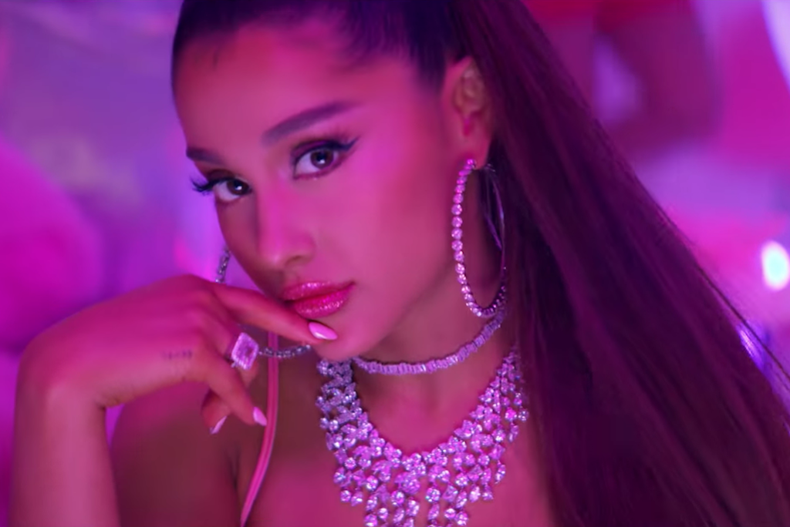
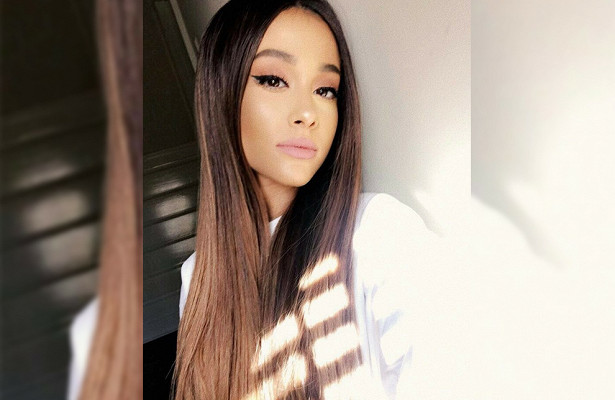
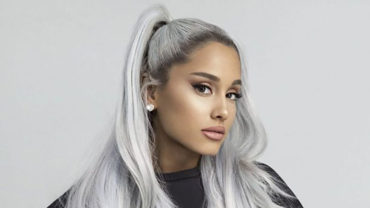
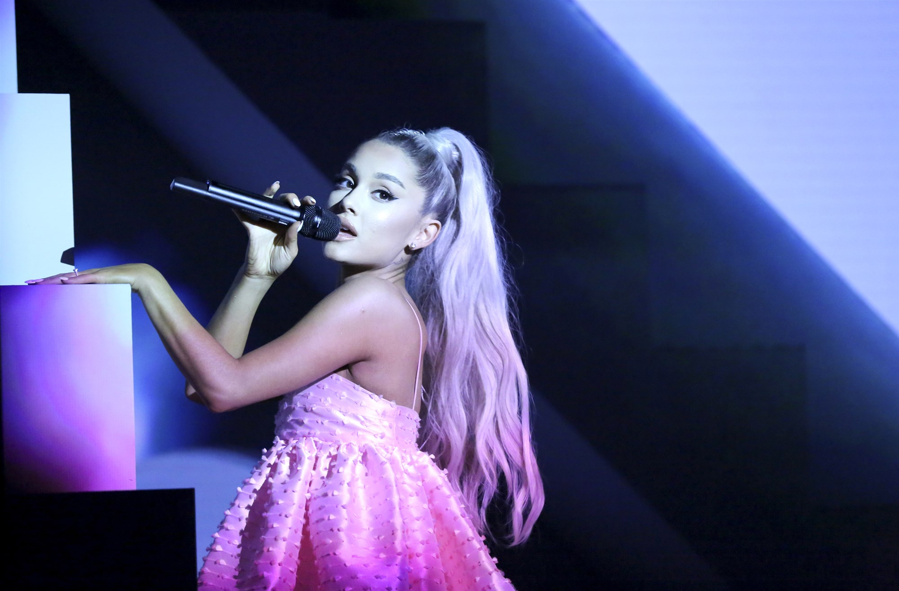
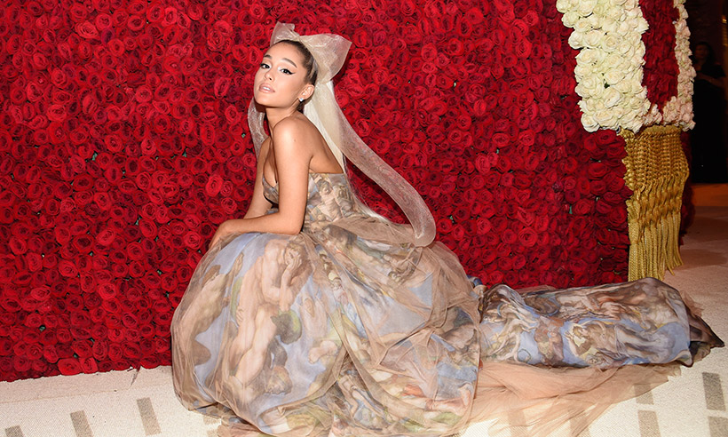
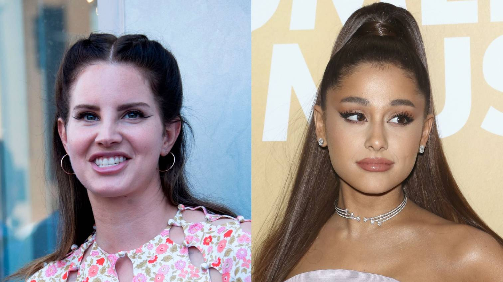

 Ariana Grande files $10 million trademark lawsuit against Forever 21.The singer Ariana Grande has sued Forever 21 for $10 million, accusing the clothing retailer of trademark infringement for stealing her name and likeness to promote its products and a beauty company started by its founders' daughters. In a complaint filed in Los Angeles federal court on Monday, Grande accused Forever 21 and the Riley Rose beauty company of publishing at least 30 unauthorized images and videos misappropriating her name, image, likeness and music to confuse consumers into thinking she endorsed them.
 Ariana Grande review, O2 Arena: One of the most rousing pop shows of the year.As the audience erupts for “No Tears Left to Cry” and the encore, a super sweet “Thank U, Next”, you realise the whole thing is carved out of Ariana Grande’s heart. After the devastating tragedy three years ago, this a show that means something to so many people. That she’s standing here today, the biggest pop star on earth, is a testimony to her resilience as a woman, and as a public figure. That she’s able to pull off one of the most rousing pop shows of the year while doing so? Well, that’s a minor miracle.
 ARIANA GRANDE APOLOGISES AFTER 'DISGUSTING' JOKE ABOUT JONBENÉT RAMSEY.As the audience erupts for “No Tears Left to Cry” and the encore, a super sweet “Thank U, Next”, you realise the whole thing is carved out of Ariana Grande’s heart. After the devastating tragedy three years ago, this a show that means something to so many people. That she’s standing here today, the biggest pop star on earth, is a testimony to her resilience as a woman, and as a public figure. That she’s able to pull off one of the most rousing pop shows of the year while doing so?
 Ariana Grande files $10 million trademark lawsuit against Forever 21.The singer Ariana Grande has sued Forever 21 for $10 million, accusing the clothing retailer of trademark infringement for stealing her name and likeness to promote its products and a beauty company started by its founders' daughters. In a complaint filed in Los Angeles federal court on Monday, Grande accused Forever 21 and the Riley Rose beauty company of publishing at least 30 unauthorized images and videos misappropriating her name, image, likeness and music to confuse consumers into thinking she endorsed them.
 Ariana Grande admits she was anxious during return to UK. Ariana Grande has opened up returning to the UK to promote her new album, Sweetener, and admitted that it was a challenging trip and she struggled with anxiety during her stay in London. Answering a fan who asked her why she hadn't posted any snaps of her trip, she wrote: "Sorry I'm really, really anxious and really exhausted and just trying to get through the trip. Hope that's ok. Hope you enjoy the performances. My priority is giving you the best performances I'm capable of."
 LANA DEL REY COVERED ARIANA GRANDE'S 'BREAK UP WITH YOUR GIRLFRIEND, I'M BORED' WITH WOOZY WHISPERS. You've heard Ariana Grande's "Break Up With Your Girlfriend, I'm Bored," but you've never heard it quite like this. Lana Del Rey stopped by BBC Radio 1's Live Lounge and gave a spooky performance of Grande's bold and sexily selfish hit, grounding the buoyant track in a mysterious swamp that swallows all who enter it. She performed her Sublime cover "Doin' Time" also, but the "Break Up" cover is what shocks. It's almost like it's an entirely different song.